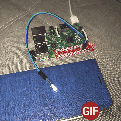
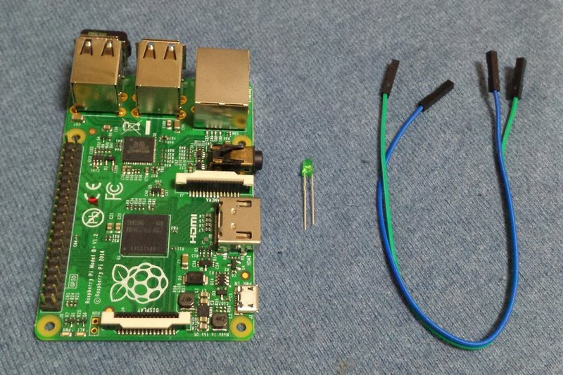
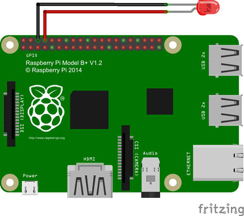

树莓派GPIO入门02-GPIO控制LED亮度，制作呼吸灯效果
上一篇我们通过控制GPIO口输出高低电平来控制一只发光二极管的亮灭。这次我们来控制发光二极管的亮度。最后做出呼吸灯的效果。
最终效果

硬件
- 树莓派一台。
- LED发光管
- 杜邦线两条

原理说明
我们知道，通过LED的电流越大，LED越亮，电流越小，LED越暗。如果可以控制输出电流大小就可以控制LED的明暗了。
但是树莓派的各引脚并没有直接调整输出电流大小的功能。要想别的办法。
我们先学习一个名词：脉宽调制（PWM）
简单的说，PWM技术就是不停的通断电路并控制通断持续的时间片段长度来控制用电器在单位时间内实际得到的电能。
这么说好像还是复杂了，再简单点说，如果你的手足够快，打开电灯开关后马上关闭，如果这个时间间隔足够短，灯丝还没有全部亮起来就暗下去了。你再次打开电灯再关闭，再打开再关闭。。。如果你一直保持相同的频率，那么电灯应该会保持一个固定的亮度不变。理论上，你可以通过调整开灯持续的时间长度和关灯持续的时间长度的比例就能得到不同亮度了。这个比例被称为“占空比”。
PWM就是差不多这个意思。
树莓派1代B型的26个针脚里，有一个特殊的GPIO口是支持硬件PWM的，不过从B+开始不知道什么原因这个很实用的接口被去掉了。
但是没关系，根据我上面的描述，我们完全可以自己写一个程序来模拟PWM。
不想自己写，没关系，我们强大的GPIO库已经帮我们写好了，直接用就可以了。
硬件连接
跟前一篇一模一样的连接方式。

代码
直接看代码和注释吧，一看就能明白。1
2
3
4
5
6
7
8
9
10
11
12
13
14
15
16
17
18
19
20
21
22
23
24
25
26
27
28
29
30
31
32
33
34
35
36
37
38
39
40
41#!/usr/bin/env python
# encoding: utf-8
import RPi.GPIO
import time
RPi.GPIO.setmode(RPi.GPIO.BCM)
RPi.GPIO.setup(14, RPi.GPIO.OUT)
# 创建一个 PWM 实例，需要两个参数，第一个是GPIO端口号，这里我们用14号
# 第二个是频率（Hz），频率越高LED看上去越不会闪烁，相应对CPU要求就越高，设置合适的值就可以
pwm = RPi.GPIO.PWM(14, 80)
# 启用 PWM，参数是占空比，范围：0.0 <= 占空比 >= 100.0
pwm.start(0)
try:
while True:
# 电流从小到大，LED由暗到亮
for i in xrange(0, 101, 1):
# 更改占空比，
pwm.ChangeDutyCycle(i)
time.sleep(.02)
# 再让电流从大到小，LED由亮变暗
for i in xrange(100, -1, -1):
pwm.ChangeDutyCycle(i)
time.sleep(.02)
# 最后一段是一个小技巧。这个程序如果不强制停止会不停地执行下去。
# 而Ctrl+C强制终端程序的话，GPIO口又没有机会清理。
# 加上一个try except 可以捕捉到Ctrl+C强制中断的动作，
# 试图强制中断时，程序不会马上停止而是会先跳到这里来做一些你想做完的事情，比如清理GPIO口。
except KeyboardInterrupt:
pass
# 停用 PWM
pwm.stop()
# 清理GPIO口
RPi.GPIO.cleanup()